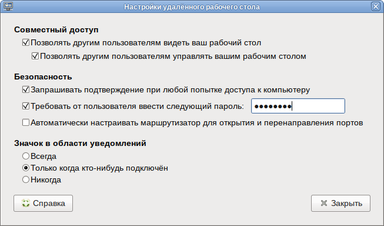
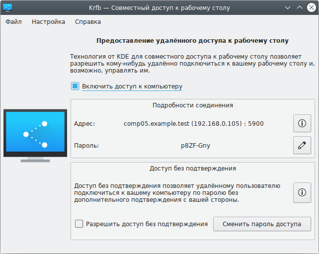
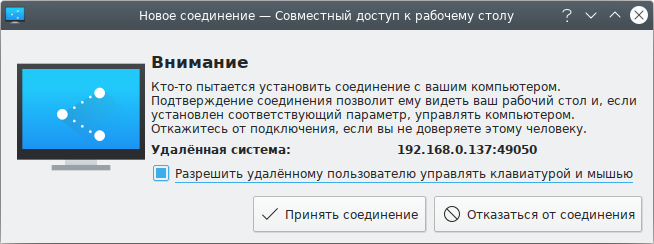
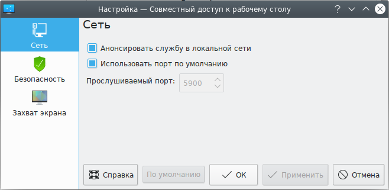
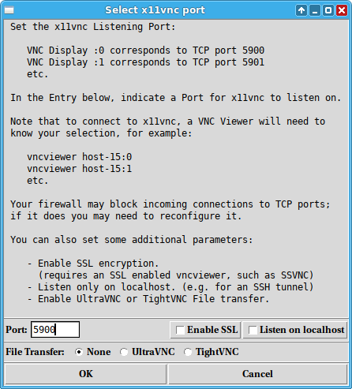
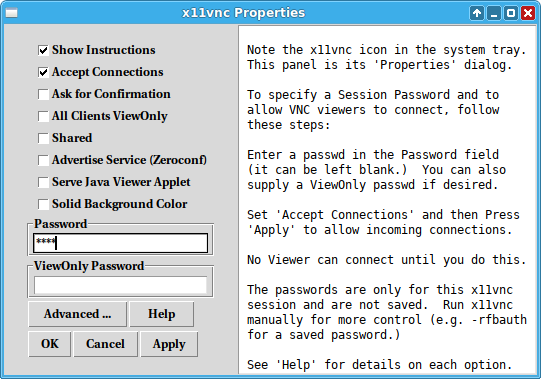
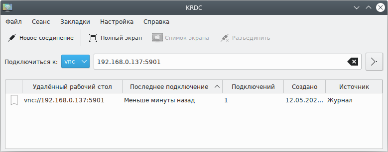
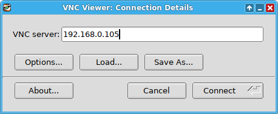
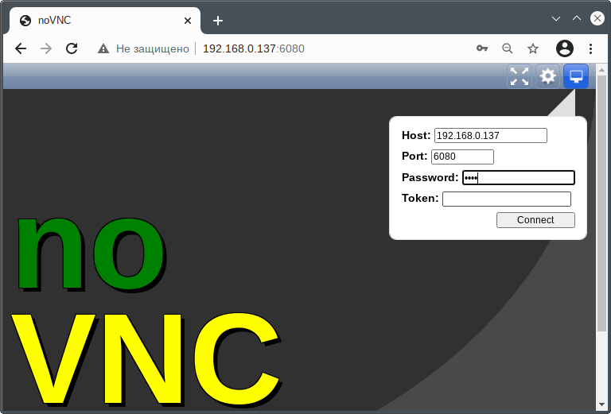

Переключить боковую панель ALT Linux Wiki
Поиск
Персональные инструменты collapsed
Данная инструкция проверена на 8-й версии дистрибутивов ALT. В 10-й версии метод "С помощью xorg-extension-vnc" убивает графическую оболочку на локальной машине. См. тж. Установка по vnc.
P.S. В Starterkits P10 на основе MATE этот способ не работает. Работает следующий способ (С помощью Vino).
1. Установите пакет xorg-extension-vnc:
apt-get install xorg-extension-vnc
2. Раскомментируйте строки в файле /etc/X11/xorg.conf.d/vnc.conf:
subst 's/^#//' /etc/X11/xorg.conf.d/vnc.conf
Примечание: При использовании SSH-туннеля для шифрования трафика (как описано для многопользовательского режима ниже) в файле конфигурации /etc/X11/xorg.conf.d/vnc.conf в секцию "Screen" необходимо добавить строку
Option "rfbport" "5902"
3. Укажите пароль для доступа к экрану:
# vncpasswd
Password:
Verify:
и укажите пароль дважды. Пароль должен быть длиной не менее 6 символов и, по соображениям безопасности, при наборе не показывается.
По умолчанию, необходимо записать пароль в файл /root/.vnc/passwd
4. Выйдите из сеанса и запустите его снова
Примечание: Данный вариант настройки доступа к машине по VNC предпочтительный, так как по умолчанию есть возможность подключения не только к дефолтному :0, но и к другим экранам — например при переключении пользователя окно авторизации будет на :1, при входе под другой УЗ — его десктоп будет :2 и так далее.
Данный способ протестирован на Рабочей станции 8 и 9 и в Starterkits/Regular на основе MATE. Пакет включен в Альт Рабочая станция.
1. Установите пакет vino-mate:
apt-get install vino-mate
2. В главном меню откройте Параметры -> Общий доступ к рабочему столу или запустите от обычного пользователя:
vino-preferences
3. Настройте необходимые Вам параметры подключения:

4. Для первичного применения параметров необходимо перезапустить сеанс (в дальнейшем изменение настроек будет происходить мгновенно). Если пакет включен в дистрибутив - данное действие не требуется.
PS: По умолчанию включено шифрование, если оно не нужно, либо Ваш VNC-клиент не поддерживает его, отключается он следующей командой:
gsettings set org.gnome.Vino require-encryption false
Примечание: Пакет vino-mate представляет собой "форк" пакета vino, на данный момент в p8 и Sisyphus актуальная версия которого - 3.22.0, однако в ней нет удобной пользовательской настройки доступа (vino-preferences). Данный функционал был убран разработчиками, подробнее об этом тут. Поэтому для DE MATE было решено вернуть последнюю версию с GUI, а именно 3.8.1 (например в Ubuntu, с ее Unity, во всех репозиториях также эта версия).
Krfb — vnc-сервер среды KDE для совместного доступа к рабочему столу. Пакет включен в Альт Рабочая Станция К 9.
1. Установить пакет kde5-krfb:
# apt-get install kde5-krfb
2. В главном меню выбрать «Сеть» ▷ «Krfb (Общий рабочий стол)» или запустить от обычного пользователя:
$ krfb
3. Настроить совместный доступ к рабочему столу:

При подключении клиента будет появляться уведомление о попытке соединения:

Если запретить удалённому пользователю управлять мышью и клавиатурой он сможет только наблюдать за вашими действиями.
Примечание: Можно разрешить удалённому пользователю подключаться без подтверждения. Для этого в окне настройки совместного доступа к рабочему столу следует отметить пункт «Разрешить доступ без подтверждения» и установить пароль доступа.
По умолчанию используется порт 5900, изменить его можно в окне Настройка ▷ Настроить совместный доступ к рабочему столу на вкладке «Сеть»:

Krfb может использоваться совместно с KRDC.
VNC сервер x11vnc в первую очередь предназначен для работы в качестве службы или демона, но программа имеет и графический интерфейс.
Установить пакет x11vnc:
# apt-get install x11vnc
Запуск VNC сервера выполняется командой:
$ x11vnc
Внимание! Запуск x11vnc без предварительной настройки небезопасен, настоятельно рекомендуется установить пароль.
Пример запуска сервера x11vnc из командной строки:
$ x11vnc --storepasswd
Enter VNC password:
Verify password:
Write password to /home/user/.vnc/passwd? [y]/n y
Password written to: /home/user/.vnc/passwd
$ x11vnc -rfbauth .vnc/passwd -display :0 -ncache 1 -rfbport 5905
Поддержка файла конфигурации: если файл ~/.x11vncrc существует, то каждая строка в нем обрабатывается как один параметр командной строки:
$ vim ~/.x11vncrc
rfbport 5905
rfbauth /home/user/vnc/passwd
Отключить использование файла конфигурации можно опцией -norc.
Если запустить x11vnc из «Меню запуска приложений» («Интернет» → «X11VNC Server») или из командной строки:
$ x11vnc -gui tray=setpass -rfbport PROMPT
будет запущен графический интерфейс x11vnc.
Примечание: Для возможности запуска графического интерфейса x11vnc Должен быть установлен пакет tk:
# apt-get install tk

Необходимо указать номер порта и нажать кнопку «OK». В системном трее появится значок x11vnc, а на экране откроется окно с его свойствами:

В окне свойств следует поставить отметку в пункте «Accept Connections» («Принимать подключения»), указать пароль в поле «Password» («Пароль») — здесь указывается пароль для возможности управления рабочим столом, можно также указать и другие опции, если они вам необходимы, например «ViewOnly Password» («Пароль только для просмотра») — зная данный пароль можно просматривать удаленный рабочий стол, без возможности управления им. Эти пароли будут использоваться только для данной сессии.
1. Установите пакет x11vnc-service (предназначен для популярных дистрибутивов с SystemD):
apt-get install x11vnc-service
2. Добавьте сервис в автозапуск и запустите его:
chkconfig x11vnc on
service x11vnc start
3. Укажите пароль для удаленного доступа (необходимо записать его в /root/.vnc/passwd):
# x11vnc --storepasswd
Enter VNC password:
Verify password:
Write password to /root/.vnc/passwd? [y]/n
4. Параметры запускаемого сервисом сервера x11vnc указаны в скрипте запуска: /usr/sbin/x11vnc-start-daemon (x11vnc-service >= 0.2). Для внесения изменений - просто отредактируйте в нем последнюю строчку.
TODO:
Данный файл не является %config(noreplace), поэтому будет перезаписан при обновлении пакета!
В планах (когда потребуется внести какое-либо изменение в пакет) переместить параметры в отдельный конфигурационный файл.
5. Примеры настройки файла /lib/systemd/system/x11vnc.service для запуска x11vnc при старте дисплей менеджера (до авторизации пользователей):
Для дисплей менеджера lightdm:
[Unit]
Description=X11VNC Server
After=prefdm.service
[Service]
User=root
Restart=on-failure
ExecStart=/usr/bin/x11vnc -auth /var/run/lightdm/root/:0 -dontdisconnect -notruecolor -noxfixes -shared -forever -rfbport 5900 -bg /var/log/x11.log -rfbauth /root/.vnc/passwd
[Install]
WantedBy=graphical.target
Для дисплей менеджера sddm:
[Unit]
Description=X11VNC Server
After=graphical.target
[Service]
Restart=always
RestartSec=30
Type=simple
ExecStart=-/bin/bash -c "/usr/bin/x11vnc -display :0 -shared -dontdisconnect -many \
-auth $(ls /var/run/sddm/{*}) -rfbauth /root/.vnc/passwd -o /var/log/x11.log"
[Install]
WantedBy=graphical.target
TigerVNC — клиент-сервер VNC.
Устанавливаем пакет tigervnc-server:
# apt-get install tigervnc-server
Примечание: К имеющемуся дисплею :0 подключиться этим способом не получится. VNC-сервер запускает новые дисплеи.
Есть две реализации разворачивания дополнительных X-серверов:
Рассмотрим оба этих способа, у каждого есть свои плюсы и недостатки.
1. Добавьте в автозагрузку:
# chkconfig vncserver on
2. Далее необходимо настроить виртуальные дисплеи, их количество и параметры запуска. Для это необходимо отредактировать файл /etc/sysconfig/vncservers. Пример содержимого файла:
VNCSERVERS="1:user1 2:user2"
VNCSERVERARGS[1]="-geometry 800x600 -depth 16"
VNCSERVERARGS[2]="-geometry 800x600 -localhost"
Переменные VNCSERVERARGS изменяет параметры по умолчанию для определенного дисплея (в квадратных скобках). Заданные пользователи — user1 и user2 — должны существовать в системе. Также для успешного старта VNC-сервера необходимо обязательно задать пароли (ничего общего с системными они не имеют) для этих пользователей (запишутся в ~/.vnc/passwd):
# su - user1
$ vncpasswd
3. Запускаем сервис:
# service vncserver start
После этого можете проверить прослушиваемые порты:
# netstat -ntlp | grep vnc
tcp 0 0 0.0.0.0:5901 0.0.0.0:* LISTEN 12414/Xvnc
tcp 0 0 127.0.0.1:5902 0.0.0.0:* LISTEN 12522/Xvnc
tcp 0 0 :::5901 :::* LISTEN 12414/Xvnc
tcp 0 0 ::1:5902 :::* LISTEN 12522/Xvnc
4. При подключении указываем номер дисплея (или номер порта), который соответствует необходимому пользователю:
$ vncviewer localhost:1
$ vncviewer localhost:5901
Примечание: Недостатком данного способа является то, что если у какого-либо пользователя зависнет сеанс или возникнет любая другая проблема, то починить это вы сможете только рестартом всего сервиса (в этом случае все сеансы завершаться, данные могут быть утеряны), перезапустить отдельный дисплей не получится.
Плюсом же является удобство администрирования с помощью единого файла настройки /etc/sysconfig/vncservers.
Для небольшого количества (до 3-5) пользователей данный вариант является вполне "конкурентоспособным". Если же пользователей планируется большое количество, либо просто нужна возможность перезапуска отдельного дисплея, то воспользуйтесь вторым способом.
1. Скопируйте необходимое количество (= кол-во пользователей VNC) юнитов vncserver@.service (после @ подставьте требуемый номер дисплея):
# cp /lib/systemd/system/vncserver@.service /lib/systemd/system/vncserver@:1.service
# cp /lib/systemd/system/vncserver@.service /lib/systemd/system/vncserver@:2.service
2. Приведите их к следующему виду (укажите имя пользователя и его домашнюю папку):
[Unit]
Description=Remote desktop service (VNC)
After=syslog.target network.target
[Service]
Type=forking
User=user1
# Clean any existing files in /tmp/.X11-unix environment
ExecStartPre=-/usr/bin/vncserver -kill %i
ExecStart=/usr/bin/vncserver %i
PIDFile=/home/user1/.vnc/%H%i.pid
ExecStop=-/usr/bin/vncserver -kill %i
[Install]
WantedBy=multi-user.target
Для изменения дефолтных параметров подключения допишите необходимые в команде ExecStart.
3. Обновите конфигурацию сервисов и добавьте в автозагрузку необходимые из созданных:
# systemctl daemon-reload
# chkconfig vncserver@:1 on
# chkconfig vncserver@:2 on
4. Задайте пароль для всех пользователей (см. 1.3.1.2):
# su - user1
$ vncpasswd
5. Теперь каждым пользовательским сеансом/дисплеем можно управлять отдельно:
# service vncserver@:2 restart
Примечание: Используйте SSH-туннель для шифрации трафика:
x0vncserver — это сервер TigerVNC, который не создает виртуальный дисплей, а использует существующий X-сервер (обычно тот, который подключен к физическому экрану).
Старт сервера (предварительно следует определить пароль сеанса с помощью инструмента vncpasswd):
$ x0vncserver -rfbauth ~/.vnc /passwd
Remmina — многопротокольный клиент с графическим интерфейсом.
KRDC — клиент VNC для среды KDE (Сеть ▷ KRDC (Удалённый доступ к рабочему столу)):

TigerVNC — клиент-сервер VNC.
Установить VNC-клиент (пакет tigervnc):
# apt-get install tigervnc
Подключение к серверу:
vncviewer [host][::port]
vncviewer [host][:display#]
Если запустить vncviewer без аргументов, будет запущено окно VNC Viewer:

Следующая команда заставляет vncviewer прослушивать данный порт (по умолчанию 5500) для обратных подключений с сервера VNC:
vncviewer --listen [port]
Примечание: x11vnc поддерживает обратные соединения, инициированные с помощью параметра командной строки '-connect', например:
$ x11vnc -connect 192.168.0.137:5678
Порт по умолчанию 5500.
noVNC — клиент VNC, использующий HTML5. noVNC позволяет подключиться к удалённому компьютеру без установки какого-либо клиента — используется лишь браузер.
Настройка удалённого доступа с помощью noVNC:
# apt-get install novnc
$ websockify.py2 6080 127.0.0.1:5900 --web /usr/share/novnc
Первый параметр в данной команде — порт на котором noVNC будет слушать. Второй параметр — IP и порт, где стоит VNC сервер: 127.0.0.1:5900. Третий параметр --web инструктирует noVNC, чтобы он отдавал содержимое директории /usr/share/novnc по HTTP(s).
Для подключения к удаленному рабочему столу:

HOWTO
32й-OpenGL на 64x • 389-ds • ActiveDirectory/DC • ActiveDirectory/FileShare • ActiveDirectory/Squid • Adobe Flash • AHCI • Участник:Alehander/Монтирование каталогов • Android-devel • Apache Kafka • Appimage • Arepo In Hasher • Asciidoc • Autoinstall • BugTracking/BugzillaMiniHowto • CDEmu и все-все-все • Chroot • Cpufreq • CreateMdRAID1onLiveSystem • CUDA • Cлайд-шоу фоновых рисунков рабочего стола • D Programming Language • DB2 • Dconf • Tools/Distribute • DPMS • DualBoot в картинках • DualBoot в картинках new • X11/DualSeat • Dynflow • Ed • EDID • ElasticSearch • EnterpriseWine • EterTips • Fdisk • FFmpeg • Fleet Commander • Folding@Home • FreeIPA • FreePascal HOWTO • Giter • GoogleTalkPlugin • Hasher/parallel • Hitachi StarBoard • Incoming/HOWTO • I2p • IconsPackaging • IPTV • ITalc • Участник:IvanZakharyaschev/Что делать, если забыл имена пользователей • Участник:IvanZakharyaschev/Что делать, если забыл пароли (в т.ч. пароль root-а) • Участник:IvanZakharyaschev/Что делать, если затёр загрузчик системы • JaCarta • JaCarta/PKI • Java/OracleSDK/Install • JavaPlugin • KVM/Helper • LAME • ActiveDirectory/Login • PVE/LXC • Mailman and lighttpd • DotFiles/Shells/MC • Microsoft Access • MIDI • MsgToEml • MultiSeat systemd • Multistation • NetInstall • Nextcloud • NTFS readonly • OpenMeetings • Otrs • OwnCloud9 • Pam mount • Pcsxr • PepperFlash в Chromium • Perfect Desktop • Участник:Petr-akhlamov/Заметки по Avconv • Pidgin • Pipelight • Dovecot/Plugins • PostgreSQL • Prelink • PstToMbox • Puppet • Puppetserver • PyVFS • Rdesktop keymap fix • Recoll • Replace disk online • Rescue manuals • Rescue/Launcher • Rescue/Recovery • Roundcube • Ruby Packaging mini-HOWTO • Rujel • Rujel HOWTO • RunaWFE • SambaADClient и клонирование диска • SAP GUI for Java • SCOM • Shared Library Symbol Versioning HOWTO • SharedFolderHowTo • Smart Proxy • Smart proxy dynflow-core • Socket race conditions • SOGo • OpenOffice.org/SSL-сертификат • SSSD/AD • Swap • Synaptic • Telegram • Telegram Desktop • Thunderbird • Tips • TLP • Unity • LTSP/UpstreamMigration • USBIP • Veyon • Viber • Video streaming vlc • VipNet Client • ViPNet Coordinator/СПТ7 • VirtualBox • VNC • VPN c динамической маршрутизацией (GRE Racoon OSPF) • WebDav • Wi-fi • Wicd • WINE • XCAT • Xfce/Ограничения • Автоматический вход • Виртуальная клавиатура в ALT Workstation • Виртуальная флешка • Включение TRIM на (внешнем) SSD • Воссоздание пользователя на отдельном home-разделе • Восстановление • Восстановление поврежденной RPM-базы • Где и как искать программы • ГОСТ в Caja • ГОСТ в OpenSSL • Гостевой сеанс • Двухфакторная аутентификация Google Authenticator • Диагностика оборудования и системы • ЕАВИИАС • ЕСПД • Загрузочная USB Flash • Загрузочные флешки • Запуск typo3 • Запуск ПО без пароля • Заставка - слайд-шоу • Зеркала • Инструкция по разворачиванию girar-builder • Как Ваш компьютер может дать доступ к себе через туннель средствами ssh, autossh, autosshd • Участник:IvanZakharyaschev/Как дать мне доступ по ssh на Ваш (мобильный) компьютер • Как запускать программы • Как найти пакет по программе • Киоск • КонсультантПлюс • Монтирование образов устройств • Настройка Alt Linux для Raspberry Pi с помощью QEMU • Настройка Fstab • Настройка принтера • Неверный размер шрифтов • О Сообществе ALT Linux • Обновление • Особые действия Thunar • Партионная почта • Перенос программ (backports) • Проверка диска на ошибки • Участник:IvanZakharyaschev/Репликация почтового ящика • Сборка пакетов • Связка Puppet и Foreman • Секционирование (партицирование) БД Zabbix на СУБД PostgreSQL • Синий экран при загрузке с USB • Скачивание видео с Яндекс.Дзен • Скачивание сайта • Создание образов устройств • Создание самоподписанных сертификатов • Создание сервиса systemd • Специальные возможности • Oracle/СПТ • Теневое копирование+Точка восстановления • Точка на цифровой клавиатуре • Управление правами • Установка Cisco Packet Tracer 7.3.1 на ALT KWorkstation P9 • Установка и настройка Rujel • Установка корневого сертификата • Что делать, если программа не работает • Шейпер для больших сетей • ЭП • Категория:32x-video-on64x • Категория:Backup • Категория:BootFlash • Категория:Fdisk • Категория:FreePascal • Категория:Rescue manuals • Категория:Upgrade • Категория:WINE
Категории: